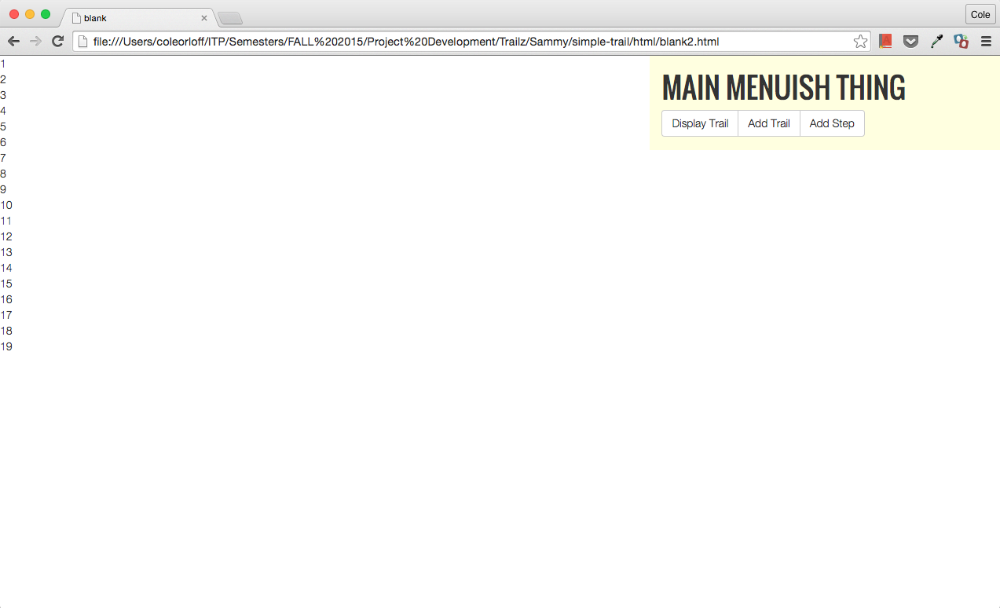
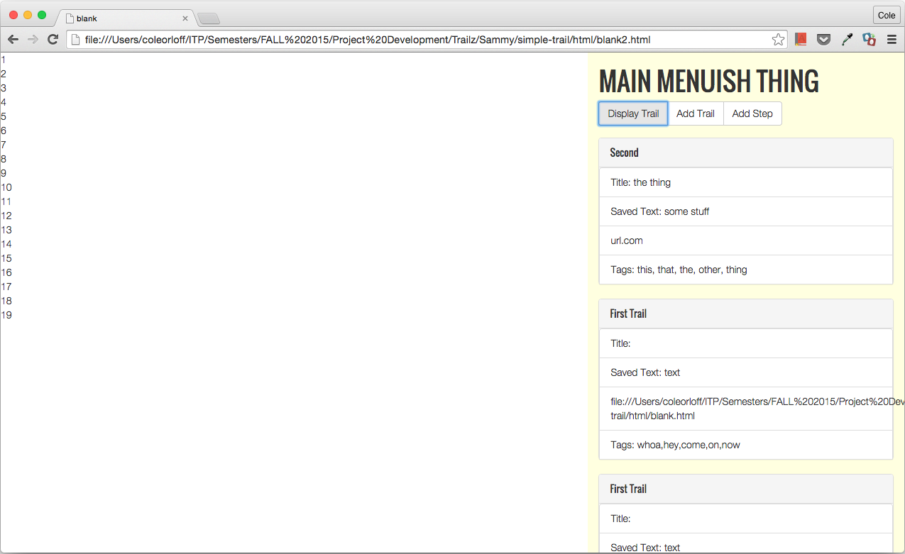

What can this image tell us about the progress of our pursuits? Well in the image one might see the research process. A series of browser tabs open in a window. Some of these tabs are relevant to the question at hand, "How do we make bookmarks useful?". In the first tab there is what might be described as a diamond, it serves an imperfect consolidation device, which hides all of your musings into one tab. It is imperfect because I never use it for its intended purpose. The next 4 tabs have to do with Mongoose Databases, particularly how to make subdocuments or in other words a nested file structure inside of a database. I haven't used those tabs in 2 weeks. The next 2 tabs are github pages which are entirely unrelated to Trailz-with-a-z, aside from the fact that we a posting our code to github, but that's only tangentially related. The remaining 7 tabs are project relevant, but largely because they illuminate the development process. Upload Chrome extension, in chrome://extensions/ --> go to the page you want to try it on, in our case an empty browser tab --> reload the page to make sure that the extension set --> click on the "Display Trailz" button injected onto the page by our extension --> watch the magic. Oh boy is there magic! This brings us to the final tab. A moment of triumph, because it represents weeks of trying to integrate a database, a chrome extension, and a pursuit of making browsing the web a better experience. But, returning our attention to the original image, the fact is it didn't really tell us anything except the quality of our extension thus far, that is to say jumbled. That is to say I told you, but thats ok because without the picture my words would mean much less. The picture however is also a lie because we have made significant process since then.  Here we have blank page which has a customized heading and menu bar programmatically injected into it from the Chrome extension. The file path which is where the URL normally lives is a mashup of personal organization and affection. The latter being there largely because Cole has referred to me as Sammy --> /Project%20Development/Trailz/Sammy/ the other folders in the system path indicate categorical organization going from broad to specific. This second (third) image shows the content of our server being added to the page after the "Display Trailz" button is pressed.  This is where I need to make a